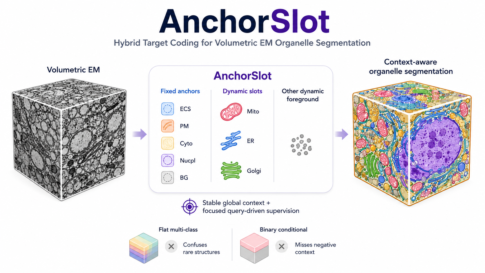

AnchorSlot: Hybrid Target Coding for Volumetric EM Organelle Segmentation
To be submitted to IEEE Transactions on Medical Imaging.
One-line contribution: Hybrid target coding that combines fixed semantic anchors with condition-dependent dynamic slots for improved dense EM organelle segmentation.